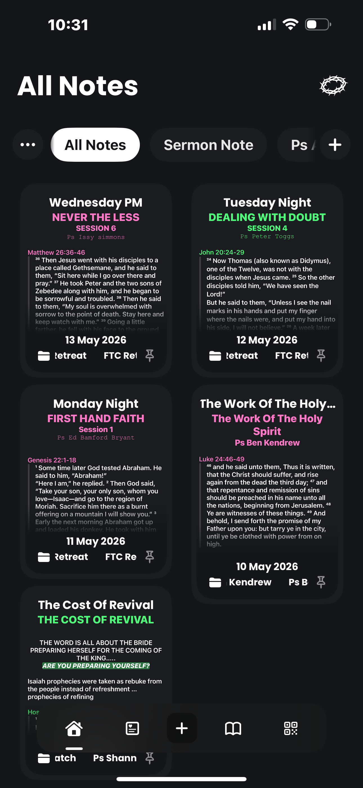
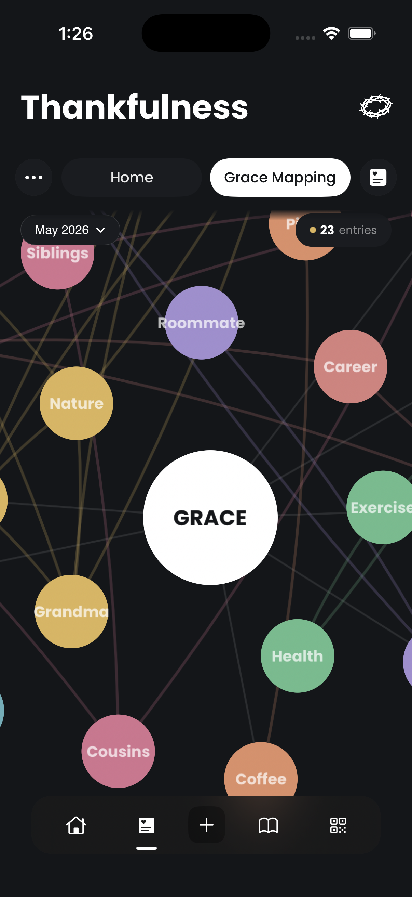

Notes
Keep the word in front of you.
Save sermon notes by session, scripture, pastor, and date so conviction has somewhere to live.
Sunday ?????? ? 2026
It’s out for pre‑order
“My GRACE is sufficient for you, for my power is made perfect in weakness.” 2 Corinthians 12:9
Capture sermon notes, turn conviction into prayer, and trace the grace of God through your actual life.
Free on iPhone. iPad and Android coming next.

All our features
Grace Journal keeps the important things close: what God spoke, what you are praying, and where grace is showing up.
Save sermon notes by session, scripture, pastor, and date so conviction has somewhere to live.
Map gratitude, people, places, and prayers into one visual record of God at work.

Organise prayers by posture, category, and status so you can keep showing up.
Grace Journal gives notes room to breathe: scripture, highlights, quotes, reminders, and the space to turn what you heard into obedience.
Just a tool to deepen your faith — built around one word. Grace.
Spiritual growth — the heart of everything below.
Note-taking that turns a sermon into something you actually come back to.
Gratitude that slows you down and shows you what you already have.
Prayer and declarations, with the Word behind every word.
Showing up to scripture consistently, not just when motivation hits.
Grace Journal — a growth app, now available. Free because impact comes first.